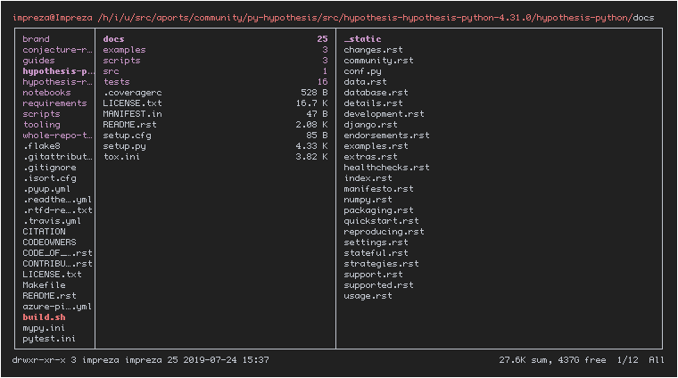
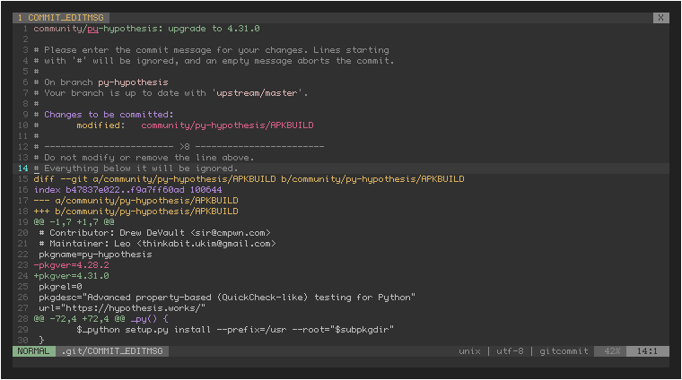
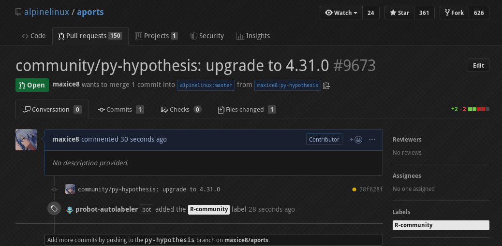

Alpine: workflow - updating a package
Intro
This is a very important post. In it i will do a walkthrough of my workflow when contributing to Alpine Linux, in this specific post i will update the py-hypothesis from 4.28.2 to 4.31.0.
Creating the py-hypothesis branch
First we need to create a branch where we work on, for it we use the gbr script
which takes a single argument which is the name of the branch. If the branch name
given exists it switches to it, otherwise it creates it and then switches to it
$ gbr py-hypothesis $ git rev-parse --abbrev-ref HEAD py-hypothesis
Switch the version and regenerate the checksum
First we switch the version from 4.28.2 to 4.31.0 on the APKBUILD, using the ax
script, which take multiple different verbs, for it we will use the g, e and
x verbs.
The first takes further arguments and shows their value in the APKBUILD, if you
want to know the pkgver you want to run ax g pkgver. The second one opens
the APKBUILD in your $EDITOR, falling back to vi.
The third one runs abuild checksum against the APKBUILD, downloading the new
tarball defined in the source variable and updating the values in the sha512sums
variable.
$ ax g pkgver sha512sums 4.28.2 3926d00d507345a179b47cace3554e3caf3310f669b27540dcea7e8d6d8433fcd45fdbba0c2149a9b968fdc7db8a25b51089ee467606f7a2b5073e964fe50933 py-hypothesis-4.28.2.tar.gz $ ax e $ ax x $ ax g pkgver sha512sums 4.31.0 9352544bf5f44d705c4cd358648791ecb6a9e81d57b27e8803bba068f2f2359bfb94aeac1a1decc5420320fff5b2dab39fcc3eb3c7e199c66856a294ad580f5c py-hypothesis-4.31.0.tar.gz
Inspecting hypothesis
After making the changes necessary in the APKBUILD i then inspect the changelog, which
most of the time is inside the source, for it i use ax u which opens my TUI file manager
ranger on the root of the extracted source code.

Building hypothesis
After inspecting that the changes are all OK i build the package using ax t which runs
dabuild a docker instance of the Alpine Linux image, a preferable alternative to
building against the system like abuild does by default as:
- It builds against a clean machine, not letting my workstation packages interfere
- It can be run with multiple parallel builds
$ ax t >>> py-hypothesis: Updating the community/x86_64 repository index... >>> py-hypothesis: Signing the index...
Testing hypothesis
If the test suite for the package isn't run or there are changes that require manual testing then the package can be installed in the system:
$ doas apk add py3-hypothesis
Creating and pushing commits
For creating the commits only git is used, for pushing the auxiliary ax s is used.
For writing the commit messages a githook is used, and if required manual changes are done. But for simple updates the githook is more than enough.

commit 78f628f348ebb14380ca2cca225043532c13c164 Author: Leo <thinkabit.ukim@gmail.com> Date: Wed Jul 24 19:49:34 2019 -0300 community/py-hypothesis: upgrade to 4.31.0 diff --git a/community/py-hypothesis/APKBUILD b/community/py-hypothesis/APKBUILD index b47837e022..f9a7ff60ad 100644 --- a/community/py-hypothesis/APKBUILD +++ b/community/py-hypothesis/APKBUILD @@ -1,7 +1,7 @@ # Contributor: Drew DeVault <sir@cmpwn.com> # Maintainer: Leo <thinkabit.ukim@gmail.com> pkgname=py-hypothesis -pkgver=4.28.2 +pkgver=4.31.0 pkgrel=0 pkgdesc="Advanced property-based (QuickCheck-like) testing for Python" url="https://hypothesis.works/" @@ -72,4 +72,4 @@ _py() { $_python setup.py install --prefix=/usr --root="$subpkgdir" } -sha512sums="3926d00d507345a179b47cace3554e3caf3310f669b27540dcea7e8d6d8433fcd45fdbba0c2149a9b968fdc7db8a25b51089ee467606f7a2b5073e964fe50933 py-hypothesis-4.28.2.tar.gz" +sha512sums="9352544bf5f44d705c4cd358648791ecb6a9e81d57b27e8803bba068f2f2359bfb94aeac1a1decc5420320fff5b2dab39fcc3eb3c7e199c66856a294ad580f5c py-hypothesis-4.31.0.tar.gz"
Then we push it, the ax s command does that automatically
$ ax s Enumerating objects: 25, done. Counting objects: 100% (25/25), done. Delta compression using up to 4 threads Compressing objects: 100% (14/14), done. Writing objects: 100% (15/15), 1.74 KiB | 1.74 MiB/s, done. Total 15 (delta 9), reused 0 (delta 0) remote: Resolving deltas: 100% (9/9), completed with 7 local objects. remote: remote: Create a pull request for 'py-hypothesis' on GitHub by visiting: remote: https://github.com/maxice8/aports/pull/new/py-hypothesis remote: To https://github.com/maxice8/aports * [new branch] py-hypothesis -> py-hypothesis Branch 'py-hypothesis' set up to track remote branch 'py-hypothesis' from 'origin'.
Making the pull request
For making the pull request we use the mkpr binary which uses the hub program
that interacts with the GitHub v3 API.
$ mkpr https://github.com/alpinelinux/aports/pull/9673

If we need to modify anything in the pull request body before creating it we can
use the -e switch to tell mkpr to open the draft of the pull request in our editor.
Merging the pull request
To merge the pull request we just get it onto the master branch and push it to upstream.
The pr binary gets a pr number and applies it.
$ gbr master $ pr 9673 Applying: community/py-hypothesis: upgrade to 4.31.0 $ pullp remote: Enumerating objects: 47, done. remote: Counting objects: 100% (47/47), done. remote: Compressing objects: 100% (33/33), done. remote: Total 36 (delta 20), reused 0 (delta 0) Unpacking objects: 100% (36/36), done. From git.alpinelinux.org:aports * branch master -> FETCH_HEAD cd02476ae9..7fee7d2efb master -> upstream/master First, rewinding head to replay your work on top of it... Applying: community/py-hypothesis: upgrade to 4.31.0 $ push Enumerating objects: 9, done. Counting objects: 100% (9/9), done. Delta compression using up to 4 threads Compressing objects: 100% (4/4), done. Writing objects: 100% (5/5), 572 bytes | 572.00 KiB/s, done. Total 5 (delta 3), reused 0 (delta 0) To git.alpinelinux.org:aports 7fee7d2efb..162bc92425 master -> master $ dlbr py-hypothesis [ OK ] Deleted local 'py-hypothesis' [ OK ] Deleted remote 'py-hypothesis'